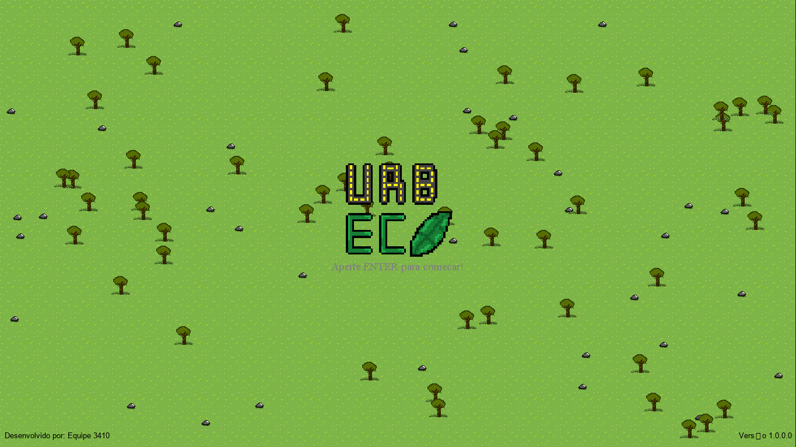

Planeje o território
Organize bairros, serviços e mobilidade para uma cidade que funciona de verdade.
Conhecer o jogo • simulação urbana
O Urb.Eco é um jogo de simulação e gestão urbana em pixel art. Cada decisão que você toma na cidade tem uma reação: o orçamento muda, a população reage e o meio ambiente sente. Equilibrar tudo isso é o desafio.

01 / Mecânicas
Seis sistemas se conectam a cada rodada: o que você faz hoje muda o que acontece amanhã.
Organize bairros, serviços e mobilidade para uma cidade que funciona de verdade.
Administre o orçamento da cidade, mantenha as contas sob controle e evite crises financeiras com decisões estratégicas.
Escolha soluções sustentáveis e veja o impacto de cada decisão no ecossistema.
Greves, poluição, desastres e insatisfação: a cidade avisa quando algo sai do trilho.
Escolha entre infraestrutura, saúde, educação e lazer — sem deixar o caixa quebrar.
Cresça sem abrir mão das pessoas e do planeta: sustentabilidade é a verdadeira pontuação.
02 / Como jogar
O ciclo do jogo cabe em três passos e se repete a cada decisão que você toma.
Acompanhe dinheiro, população e satisfação no painel da cidade antes de agir.
Zoneie terrenos, ergua construções e distribua serviços por onde a cidade cresce.
Toda escolha tem preço: reequilibre a rota quando a economia, as pessoas ou o meio ambiente cobrarem.
“Cada construção é uma escolha. Cada escolha muda o rumo da sua cidade.”